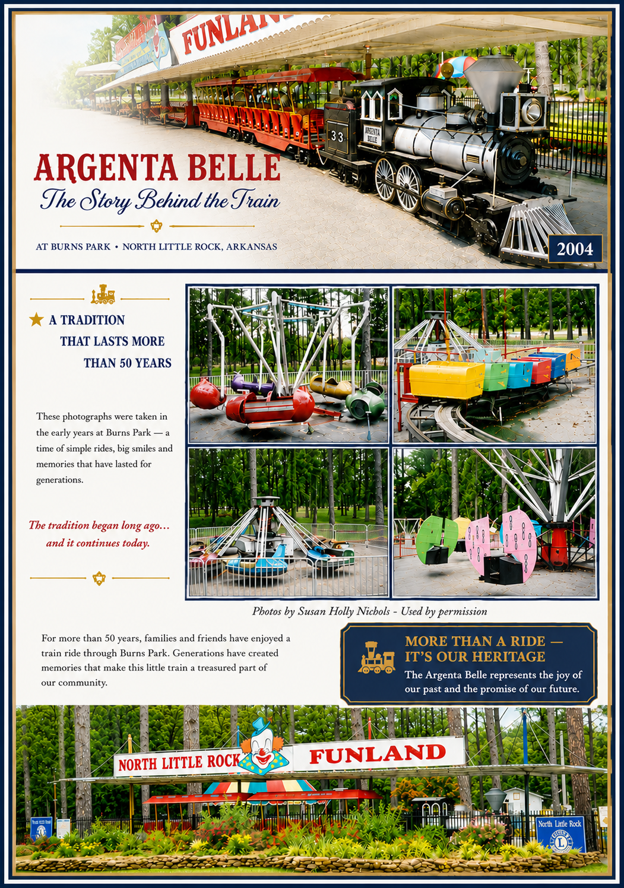
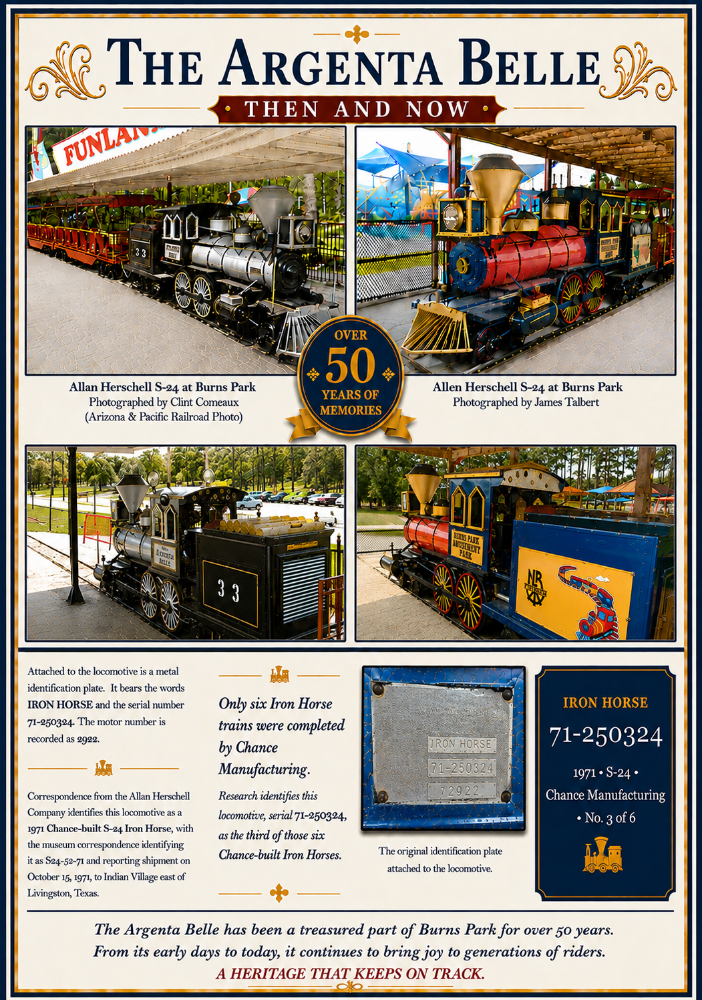
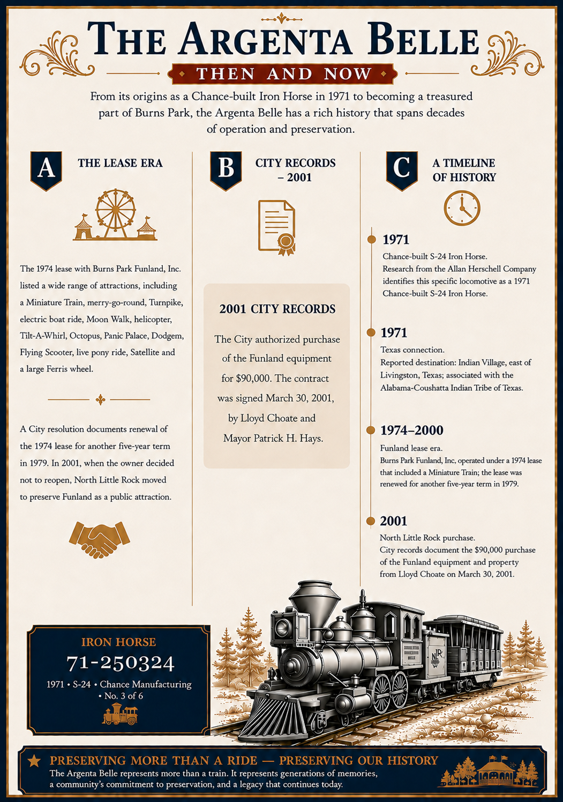
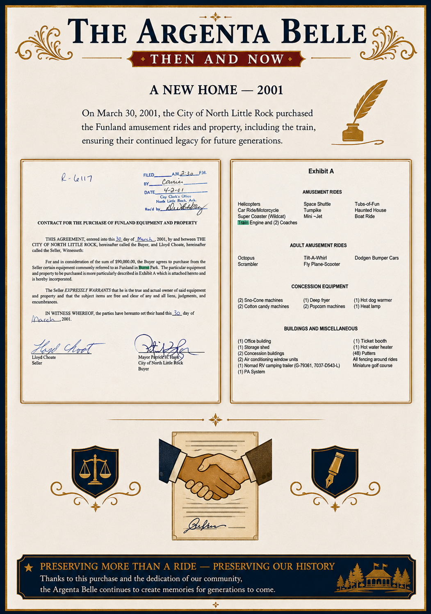
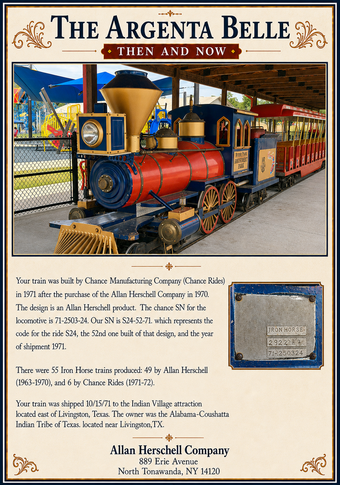

The Argenta Belle
A historical presentation of the train, its Chance Manufacturing heritage, and its years of operation at Burns Park.
PAGE 1 OF 5

PAGE 2 OF 5

PAGE 3 OF 5

PAGE 4 OF 5

PAGE 5 OF 5

Research Sources
- Arizona & Pacific Railroad — S-24 Registry and historical research concerning Allan Herschell Iron Horse and Chance Manufacturing trains.
- Chance Manufacturing / Chance Rides — Historical information and correspondence concerning Chance-built S-24 trains and serial-number identification.
- Allan Herschell Carousel Museum — Historical information and documentation concerning the Allan Herschell Company and the Iron Horse train.
- Arkansas State Archives / Department of Arkansas Heritage — Historical research and documentation concerning the Argenta Belle and its history.
- City of North Little Rock records — Documentation concerning the purchase of the Funland rides.
Prepared by James Talbert
Park Ranger